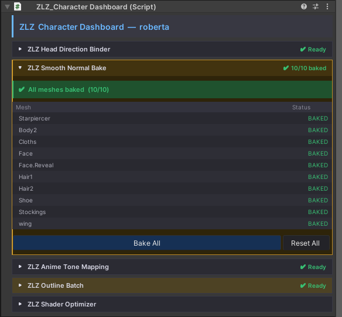
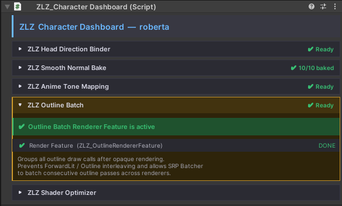
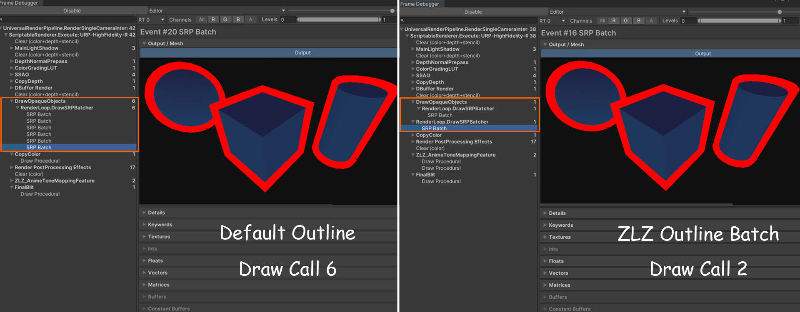
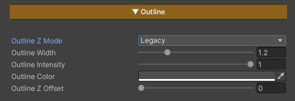

Outline
ZLZ Smooth Normal Bake (Update in 1.4.0)

When installing the ZLZ_Character Dashboard, the system will automatically bake everything for you.
This helps make the outline smoother and cleaner, ensuring the highest outline quality.
If the mesh is updated later, simply press “Bake All” to rebake and finish the setup.
No SmoothNormalBake
SmoothNormalBake
ZLZ Outline Batch (Update in 1.4.0)

ZLZ Outline Batch automatically optimizes outline rendering by generating shared batching tags,
reducing unnecessary draw calls while preserving the original visual quality.

Parameters

- Outline Z Mode : Provides two modes:
- Legacy — Allows the use of Outline Z Offset, but may cause issues when used with certain types of reflections
- Planar Safe — Resolves compatibility issues with some reflection types, but disables the use of Outline Z Offset
- Outline Width : Adjusts the thickness of the outline
- Outline Intensity : Controls the brightness of the outline (0 = black / 1 = uses the Base Color from the Main Texture)
- Outline Color : Directly sets the outline color
- Outline Z Offset : Adjusts the offset distance of the outline from the character surface, used to prevent z-fighting with the surface or to increase outline prominence
Example Outline Colors
Outline Showcase Color Example1
Outline Showcase Color Example2
Example Z Offset
Outline Z Offset : 0
Outline Z Offset : 0.025